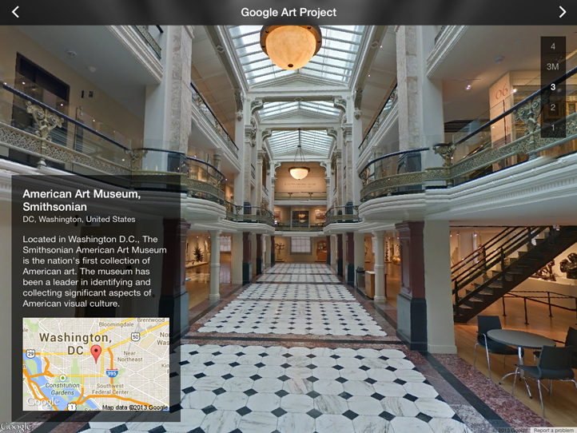

TCGoogleStreetView is a sample app uses Google Street View technology to give users a virtual tour of the museums featured in Google Art Project.
This app also features a speaking tour guide that makes use of the new class introduced in iOS 7 - AVSpeechSynthesizer.

Quick Guide to Using the App
- Use the floor picker control on the top right corner to select different floors of a museum to view.
- Use the navigation arrows
<>on the top bar to move between different museums. - The camera's heading will automatically rotate to give you a 360 degrees view of the museum. You can stop the camera animation anytime by touching the panorama view.
- Double tap in the panorama view to navigate around the museum.
- Drag to change where the camera is facing.
- Pinch to zoom camera in and out.
- App supports both landscape and portrait orientation, so you can rotate the device to get the best view of the museum.
How to Build and Run
- Build Requirements
- Xcode 5, iOS 7 SDK, CocoaPods
- Runtime Requirements
- iOS 7 or later, iPad only
Step 1: Download and Install CocoaPods
If you've already installed CocoaPods, you can skip to Step 2.
Otherwise, install CocoaPods by following the quick installation guide at http://cocoapods.org/.
Step 2: Install Library Dependencies
This sample app needs to download and install the required libraries before it can be build. We'll let CocoaPods do all the hard work for us.
Run the following commands in Terminal.app:
$ cd <YOUR_PROJECT_DIRECTORY>
$ pod install
$ open TCGoogleStreetView.xcworkspace
Step 3: Generate your Google API Key
- Go to Google API Console and generate your API key.
-
In Xcode, open
TCGoogleStreetView\AppDelegate.mand replace with your own API key:// Replace with your own API key generated using Google APIs Console. static NSString * const kTCGoogleMapsAPIKey = @"YOUR-API-KEY";
Unit Tests
TCGoogleStreetView includes a suite of unit tests in the TCGoogleStreetViewTests directory. The unit test framework used is XCTest, so you can run the unit tests easily from XCode using the shortcut ⌘U.
See Also
- Google Maps SDK for iOS - https://developers.google.com/maps/documentation/ios/
- SDWebImage - https://github.com/rs/SDWebImage
License
This project's source code is provided for educational purposes only. Street View logo is the copyright of Google. See the LICENSE file for more info.